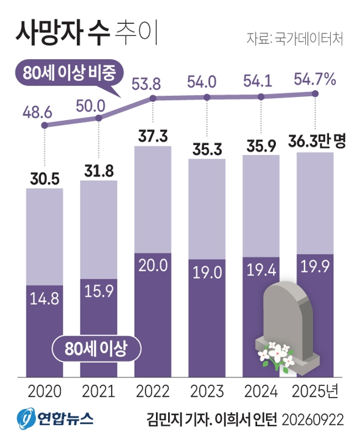

9/23(수) · 기준 2026-09-22 22:00 ~ 2026-09-23 06:00
엑셀 다운로드
"이미지 다운로드"를 누르거나, 이미지를 길게 눌러 저장한 뒤 카톡으로 보내세요.

![[연합뉴스] 2026 아이치·나고야 아시안게임 메달리스트(22일)](images/graphics/연합뉴스_01.jpg)
![[연합뉴스] 2026 아이치·나고야 아시안게임 국가별 메달 현황(22일)](images/graphics/연합뉴스_02.jpg)
![[연합뉴스] 사우디아라비아 원유 수송망 가동 재개](images/graphics/연합뉴스_03.jpg)
![[연합뉴스] 우버 배달의민족 인수 추진](images/graphics/연합뉴스_04.jpg)
![[연합뉴스] 김건희 '매관매직' 2심 선고 결과(종합)](images/graphics/연합뉴스_05.jpg)
![[연합뉴스] 국민참여성장펀드 2차 판매 개요](images/graphics/연합뉴스_06.jpg)
![[연합뉴스] 김건희 '매관매직' 2심 선고 결과](images/graphics/연합뉴스_07.jpg)
![[뉴스1] [그래픽] 2026 아이치·나고야 아시안 게임 펜싱 에페 여자 금메달-송세라](images/graphics/뉴스1_09.jpg)
![[뉴스1] [그래픽] 김건희 여사 '현대판 매관매직' 2심 판단](images/graphics/뉴스1_10.jpg)
![[뉴스1] [오늘의 증시] 9월 22일 코스피 코스닥](images/graphics/뉴스1_11.jpg)
![[뉴스1] [그래픽] 노원·관악 아파트 평균 매매가격 추이](images/graphics/뉴스1_12.jpg)
![[뉴스1] [오늘의 그래픽] 추석 귀성길 자가용 대신 KTX 타면 탄소 78% ↓](images/graphics/뉴스1_13.jpg)
![[뉴스1] [그래픽] 1인 가구 유형별 현황](images/graphics/뉴스1_14.jpg)


![[속보] 이 대통령, 이형일·강신철·홍지선 장관 임명안 재가](images/article_04.png)


![[단독] 韓, 미국에 원전 8기 건설 …'한국형' 2기는 웨스팅에 로열티낼듯](images/article_07.png)


![美·이란, 뉴욕서 3시간 회담…트럼프 “아주 가까운 시일 내 추가 회담”[1일1트]](images/article_18.png)

![트럼프, 시진핑 머리 위에 B-2 폭격기 날리는 속셈…푸틴 의전과 비교해보니 [핫이슈]](images/article_20.png)